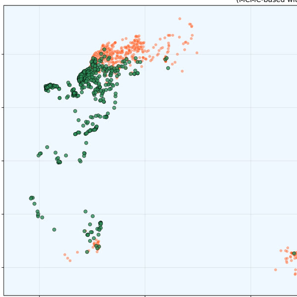
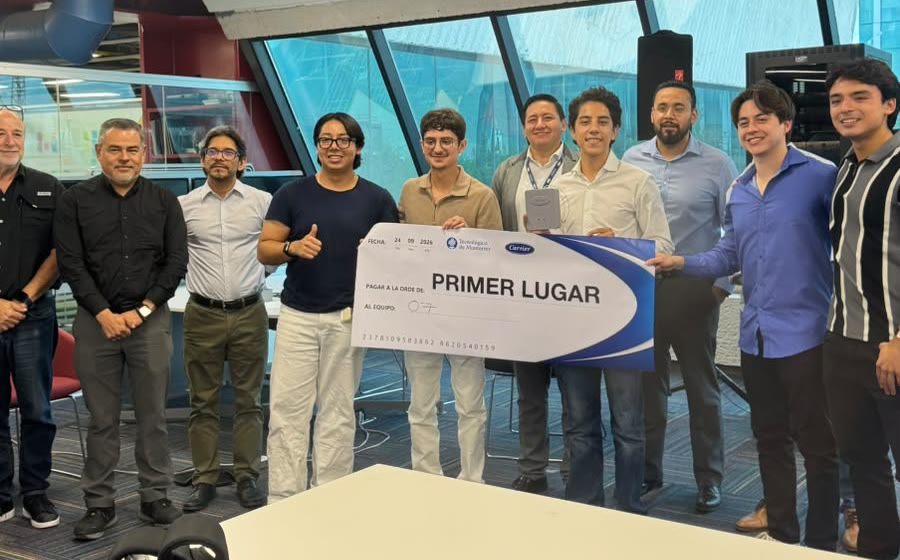
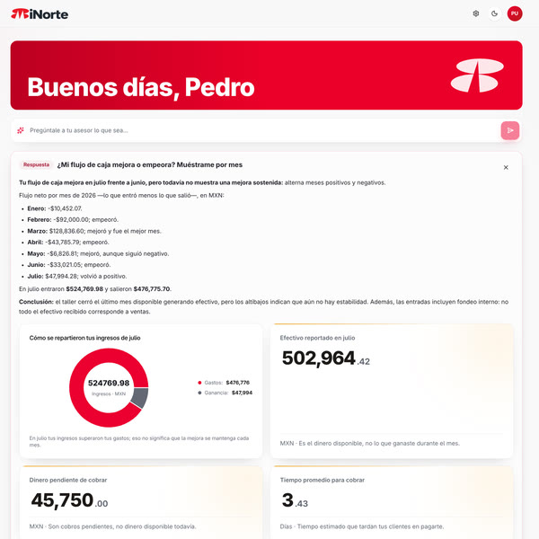
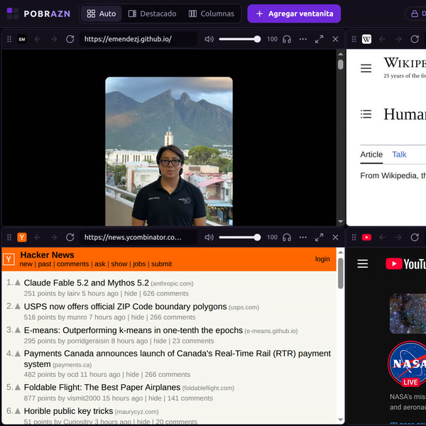

More Projects
Hackathons and tools that are not on my CV.

Shark foraging from space
My Bayesian hidden Markov model labels shark tracks as foraging or migrating, using NASA PACE ocean color, sea temperature and eddies.

SentinelBox
A neural network scores HVAC health from vibration, current and temperature on an ESP32.
Latch
ROS 2 node that picks the car to follow: the closest tracked vehicle ahead in our lane, from LiDAR tracking.
AgriTech
A Puzzlebot that patrols crop rows, counts ripe fruit by color and waters the plants. My part: the hardware that lets it drive the route.

MiNorte
Turns an SME's bank movements into decisions. My part: snap a receipt and a browser agent files the official invoice (CFDI).
G1 Playground
MuJoCo pick-and-place starter so new members can drive the G1 before touching it.
RL in Isaac Lab
Training locomotion with PPO for the tutorial's sim-to-real finale on a Go2.
Pip
A desktop companion that turns a stuck task into next steps, designed with Specialisterne.

POBRAZN
Multiview browser: many live pages at once, with per-tile audio.